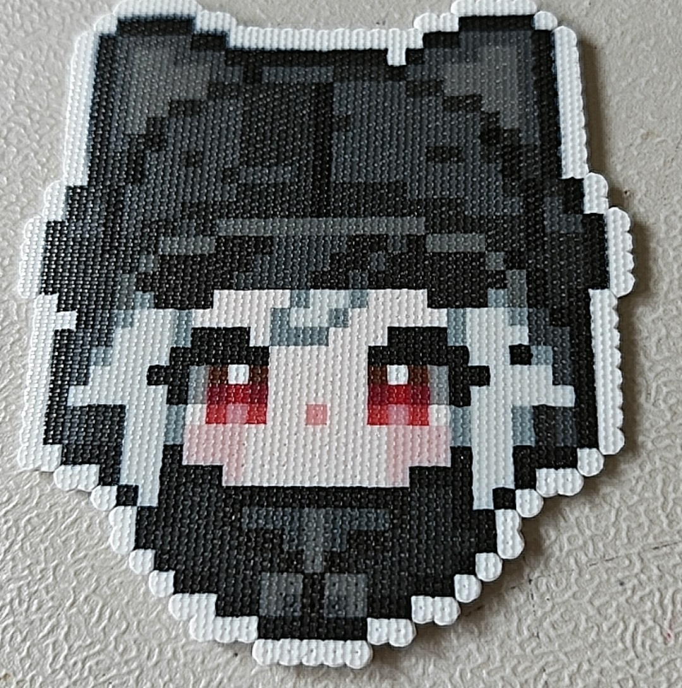

近期有一种很火的玩具,叫做拼豆.

(图源:万人恢复,已征得作者同意)
如果你还想看更好玩的可以参考下面的视频:
(视频源:万人恢复,已征得作者同意,作者说附近有人在装修…)
什么是拼豆?
很小的塑料圆柱,用类似毛衣针做成的镊子穿起来,然后摆在格点板上(拼豆),最后用电熨斗烫平(烫豆).
拼豆因为消磨时间,再一次火了起来.
几种论调
Fluu想从技术层面解析这个东西,先从几种论调开始.
- 一代人有一代人的十字绣?
对.
拼豆和十字绣非常相近,二者的共性都是:
费眼,浪费时间,便宜,好玩,工艺品,拼的时间长了腰疼.二者的不同点是,十字绣做好了能当抹布用,但拼豆做好了什么都干不了.(拼豆本来就是熨斗烫的,所以不要指望能当杯垫,小心粘杯底)
- 拼豆是穷人的3D打印?
答对一半.
首先便宜的3D打印机没几个颜色能打是真的,而且拼豆确实可以拼起来实现多层立体的复杂一些的模型.但拼豆有一个很大的竞争对手,那就是uv打印机.
比颜色?uv打印机颜色是配出来的,完爆拼豆(但是拼豆的颜色完爆3D打印)
比价格?uv打印机便宜的85就能搞定,不比拼豆贵到哪去.如果便宜的3D打印(没多色)+便宜的uv打印机,各取所长,那就能实现立体模型,完爆拼豆(但此时价格不占优势),所以只答对了一半.
- 拼豆可以让人进入心流状态?
不做评价.
有的人就是喜欢玩这个东西,那就让他们玩呗…
- 拼豆店值得入吗?
不好说.
如果本来你就有一家买玩具的店面,那么改改拼豆店非常简单,建议蹭一波热度加几个桌子.
如果你什么都没有就打算跟风,那还是算了吧.
拼豆这个东西没有任何门槛,在家里拼也是拼,为什么要到你的店里呢?
颜色多?服务好?社交需求能满足(人多)?
如果不明白拼豆店的本质是卖什么,那还是别蹭风头了.
Fluu的观点
不如睡觉.
当你不知道干什么的时候,睡觉是一个绝对保值的行为.